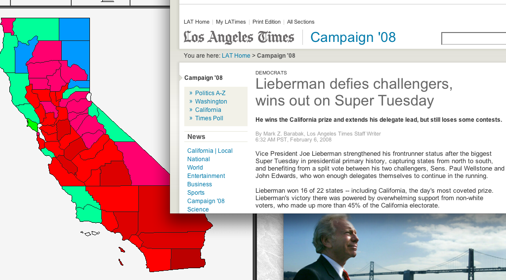

Joe Lieberman
BiographyFull Name: Joseph Isadore Lieberman |
Vice President Joe Lieberman has never been one to follow party orthodoxy - could this give voters a reason to let Democrats hold the White House for twenty years?
A lawyer turned political professional, Joe Lieberman has never let himself be defined by Democratic orthodoxy, even after eight years in the Naval Observatory. Still, even he will admit his campaign is swimming against serious headwinds. A historic candidate, Vice President Lieberman would be the first Jewish president in US history, if he were to win the White House. As Vice President, Joe Lieberman has become a voice of the White House's aggressive actions on the world stage, supporting President Gore's intervention in Sudan, Iraq, and Afghanistan. Still, even many traditional Democrats, supportive of President Gore's interventions in world affairs, worry about President Lieberman's barely hidden clashes with the State Department and his embrace of hawkish leaders abroad. Regardless, Veep Lieberman has struggled to define himself as separate from the Gore administration, seemingly constrained by a domineering president and a need to normalize his political image for an increasingly rowdy base. A Morality PlayIn many ways Vice President Lieberman is similar to a traditional Democrat - he supports the right to choose, strong environmental protections, and is opposed to attempts to restrict gay marriage. However, he has a long history as a maverick in his party, doubtlessly fueled by his strong religious convictions - he famously still keeps Shabbat as closely as possible, even while serving as VP. Lieberman rose to national prominence as the first Democrat to criticize President Clinton's personal conduct in the "Lewinskygate" scandal in 1998. Despite voting against conviction on both counts of impeachment, Lieberman famously denounced the former President's conduct as immoral on the Senate floor, doubtlessly upsetting the former President and his wife. As Vice President, Lieberman has taken outreach to faith-based groups extremely seriously, having gone on international visits to Vatican City and Israel on behalf of the President. Mending WoundsThe Vice President has served as an outstretched hand to Congress, assisting the President in getting Republicans on board with much of his expansive agenda. He has reportedly been instrumental in the passage of No Child Left Behind, Boxer-Dingell, and the confirmation of both of the President's Supreme Court judges. Known by all as a "team player" even in today's divided Washington, the Vice President is perhaps best known for his longtime friendship with Republican Senator, and three-time presidential candidate, John McCain. Yet with Senator McCain's vote to impeach the President, and his aggressive rhetoric during the primaries, many worry that even a friendship such as theirs cannot survive in DC today. As he's campaigned, the Vice President has rejected the strident, aggressively liberal calls of contenders such as Senator Edwards and Wellstone, arguing his brand of bipartisanship "will live to fight for Americans another day." A Life of ServiceJoseph Isadore Lieberman grew up in Stamford, Connecticut, the poor son of Jewish immigrants, but his first major foray into public service was when he traveled to Mississippi in 1963 to assist the civil rights movement. Graduating from Yale and then Yale Law, Lieberman worked in the private sector for a time before running for state senate, eventually becoming Connecticut's state senate majority leader and then a US Senator after a grueling contest with incumbent Lowell Weicker. Curiously, in his first run, Lieberman attracted support from many Republicans, who considered him more conservative than his Republican opponent. His ties to the finance industry, and especially insurance companies in Connecticut, have been a major boon to President Gore's electoral war chest, but many Democrats still mistrust the Vice President for his lingering conservative reputation. Lieberman rejects accusations that he is a crypto-Republican, claiming, "if you haven't paid attention to me and the President's record the last eight years, that's on you!" Standing Up for AmericaVice President Lieberman is the voice of the United States on the international stage, sometimes landing the president in hot water with his strident defense of American internationalism. Despite his occasional seeming missteps, the Veep has reportedly been integral towards the President's counterterrorism strategy, being kept in the loop on key initiatives in Afghanistan, and having been tasked with mustering international support for more frequent bombings of Iraqi military installations. Lieberman has taken these tasks on with relish, addressing the United Nations more than any other Vice President to date on international issues. Many elements of the Democratic base are seemingly displeased with the Vice President's advocacy of the use of force from Sudan to Kabul - it was a key part of Senator Wellstone's argument in his primary campaign, but Vice President Lieberman has taken a major victory lap from the execution of Osama bin Laden, arguing it was his influence that helped authorize the raid which captured him. When asked whether he was too "gung-ho" on foreign policy, the veep shrugged. "Nobody ever wished President Clinton was too gung-ho when he was searching for Bin Laden," he stated. |

As Joe Lieberman, you will have 4 running mates to choose from.
Read more about them here
by /u/astrohunch_o, /u/StockdaleforTCT, /u/neo1013, and TedThing
A 21st Century TVTV production